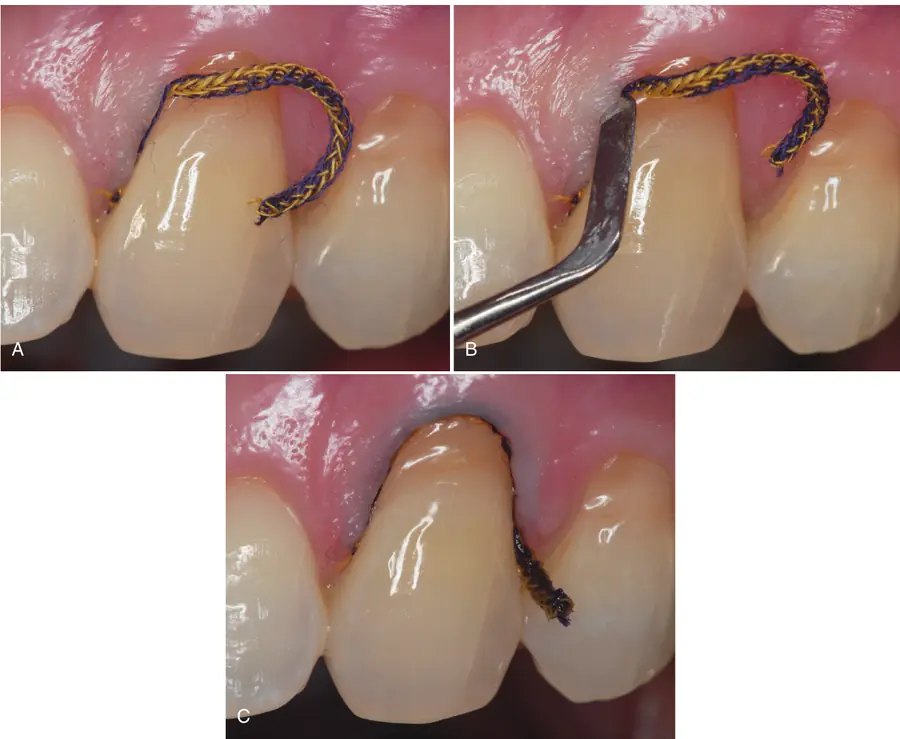

نسخه استخراجشده؛ ترجمه یا تأیید علمی انجام نشده است. وضعیت: captured
حفرهی کلاس V پرمولر دوم پایین کمی زیر لثه رفته و رابردم نگذاشتهاید. دانشجو نخ رترکشن را در سولکوس گذاشته، ولی ساکشن بزاق و رول پنبه را فراموش کرده است. چند دقیقه بعد لبهی لثهای حفره زیر بزاق است. نخ کجا کم آورد؟
وقتی رابردم نمیگذاری، نخ رترکشن (retraction cord) هم ایزوله میکند و هم لثه را کنار میزند: در ترمیم مستقیمی که لبهاش زیر لثه ولی در دسترس است، و در ترمیم غیرمستقیم. نخ را معمولاً با یک مادهی بندآورندهی خون غیرسوزاننده خیس میکنی تا نشت مایع سولکوس و خونریزی را همانجا مهار کند.
ولی نخ فقط سولکوس را مهار میکند، نه بزاق را. آن را همیشه با کنترل بزاق همراه کن: ساکشن بزاق و رول پنبه. کنار زدن لثه تا میدان خشک نباشد و خشک نماند، بیفایده است.
بیحسی ناحیه برای راحتی بیمار گاهی لازم است و گاهی نه.
با دستکش لاتکس فقط سرهایی از نخ را لمس کن که بعد بریده میشوند؛ احتمال دادهاند لاتکس دستکش گیر PVS را در سولکوس مختل کند.

نخ خشک را بیرون نکش؛ ممکن است کل لایهی اپیتلیوم سولکوس را با خود بکند، شبیه زخمی که کندن رول پنبهی چسبیده از مخاط خشک میدهد. پیش از برداشتن با آب خیسش کن. سولکوس پس از برداشتن نخ زود بسته میشود؛ قالب را بیدرنگ بگیر.
نکتهی طلایی: نخ را بیش از حد فشرده نکن و بارها در یک سولکوس نگذار. هر دو اتصال لثه را پاره میکنند و تحلیل برگشتناپذیر لثه میدهند.